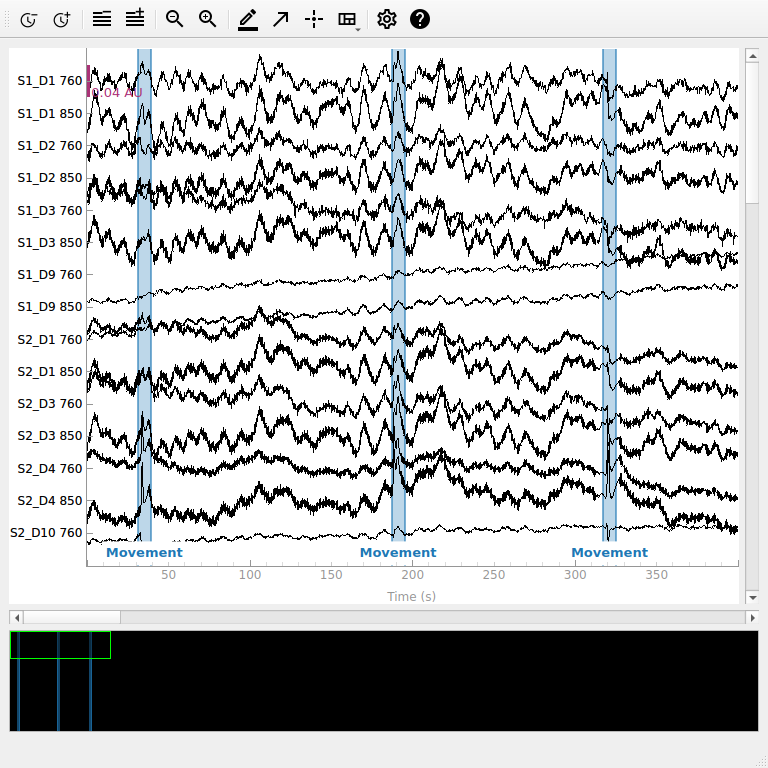
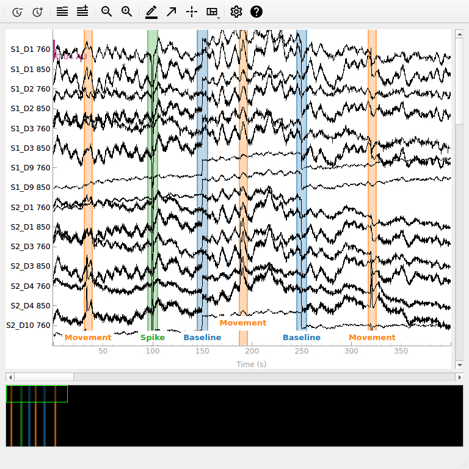
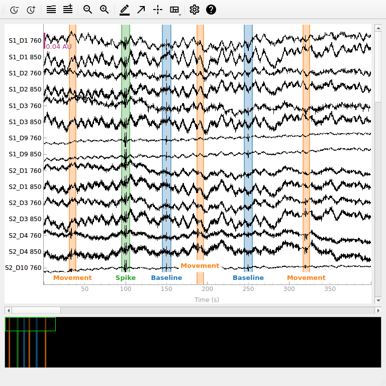
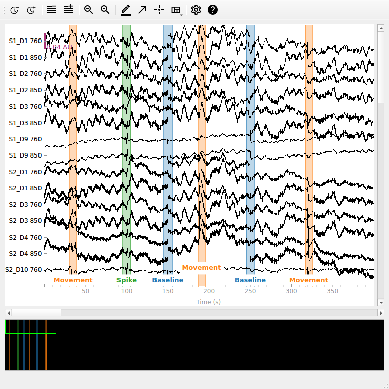
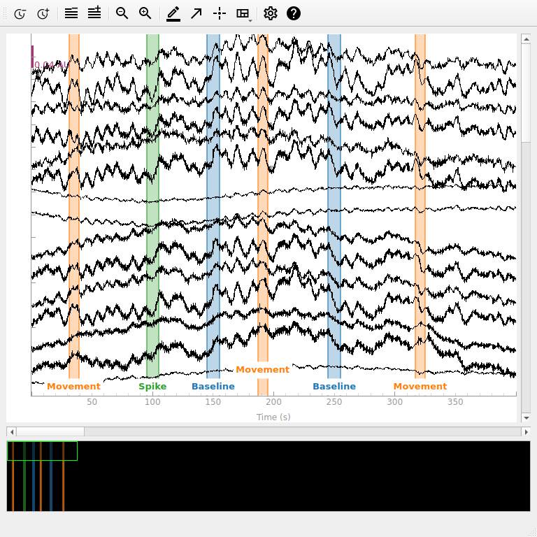
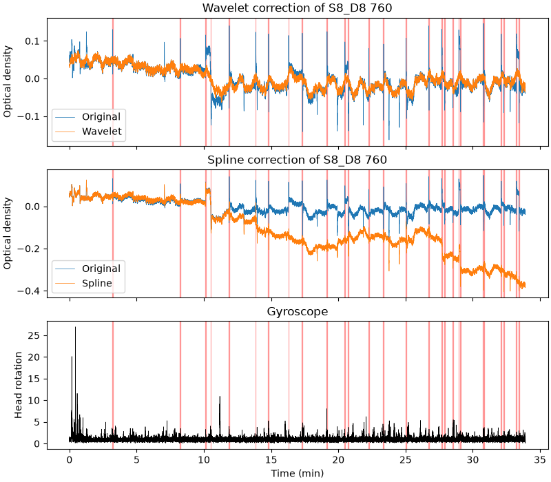

Note
Go to the end to download the full example code or to run this example in your browser via Binder.
Artifact Correction Techniques#
Here we artificially introduce several artifacts in a functional near-infrared spectroscopy (fNIRS) measurement and observe how artifact correction techniques attempt to correct the data.
# Authors: Robert Luke <mail@robertluke.net>
#
# License: BSD (3-clause)
import os
import matplotlib.pyplot as plt
import mne
import numpy as np
from mne.preprocessing.nirs import (
optical_density,
temporal_derivative_distribution_repair,
)
from mne_nirs.datasets import snirf_with_aux
from mne_nirs.io.snirf import read_snirf_aux_data
from mne_nirs.preprocessing import (
detect_motion_artifacts,
motion_correct_spline,
motion_correct_wavelet,
)
Import data#
Here we will work with the fNIRS motor data. We resample the data to make indexing exact times more convenient. We then convert the data to optical density to perform corrections on and plot these signals.
fnirs_data_folder = mne.datasets.fnirs_motor.data_path()
fnirs_cw_amplitude_dir = os.path.join(fnirs_data_folder, "Participant-1")
raw_intensity = mne.io.read_raw_nirx(fnirs_cw_amplitude_dir, verbose=True)
raw_intensity.load_data().resample(3, npad="auto")
raw_od = optical_density(raw_intensity)
new_annotations = mne.Annotations(
[31, 187, 317], [8, 8, 8], ["Movement", "Movement", "Movement"]
)
raw_od.set_annotations(new_annotations)
raw_od.plot(n_channels=15, duration=400, show_scrollbars=False)

Loading /home/circleci/mne_data/MNE-fNIRS-motor-data/Participant-1
Reading 0 ... 23238 = 0.000 ... 2974.464 secs...
<MNEQtBrowser | RawNIRX, browsing 56 channels, 2974.7 s>
We can see some small artifacts in the above data from movement around 40, 190 and 240 seconds. However, this data is relatively clean so we will add some additional artifacts below.
Add artificial artifacts to data#
Two common types of artifacts in NIRS data are spikes and baseline shifts. Spikes often occur when a person moves and the optode moves relative to the scalp and then returns to its original position. Baseline shifts occur if the optode moves relative to the scalp and does not return to its original position. We add a spike type artifact at 100 seconds and a baseline shift at 200 seconds to the data.
corrupted_data = raw_od.get_data()
corrupted_data[:, 298:302] = corrupted_data[:, 298:302] - 0.06
corrupted_data[:, 450:750] = corrupted_data[:, 450:750] + 0.03
corrupted_od = mne.io.RawArray(
corrupted_data, raw_od.info, first_samp=raw_od.first_samp
)
new_annotations.append([95, 145, 245], [10, 10, 10], ["Spike", "Baseline", "Baseline"])
corrupted_od.set_annotations(new_annotations)
corrupted_od.plot(n_channels=15, duration=400, show_scrollbars=False)

Creating RawArray with float64 data, n_channels=56, n_times=8924
Range : 0 ... 8923 = 0.000 ... 2974.333 secs
Ready.
<MNEQtBrowser | RawArray, browsing 56 channels, 2974.7 s>
Apply temporal derivative distribution repair#
This approach corrects baseline shift and spike artifacts without the need for any user-supplied parameters [1].
corrected_tddr = temporal_derivative_distribution_repair(corrupted_od)
corrected_tddr.plot(n_channels=15, duration=400, show_scrollbars=False)

<MNEQtBrowser | RawArray, browsing 56 channels, 2974.7 s>
We can see in the data above that the introduced spikes and shifts are largely removed, but some residual smaller artifact remains. The same can be said for the artifacts in the original data.
Detect motion artifacts#
The remaining techniques are ports of the Homer3 functions
[2] and reproduce their output. They work in two
stages: the motion artifacts are first detected and the flagged segments
are then corrected.
detect_motion_artifacts() flags a
sample when, within a window of t_motion seconds, the signal changes by
more than stdev_thresh times the standard deviation of its first
derivative, or by more than amp_thresh optical density units.
Each flagged sample is padded by t_mask seconds.
Both wavelengths of a source-detector pair are evaluated together and share
one mask. The default thresholds are those of Homer3, but suitable values
depend on the sampling rate and noise level of the recording, so we use
stricter values here that pick up the artifacts in this resampled data.
The returned mask is True for clean samples and False for motion.
mask = detect_motion_artifacts(corrupted_od, stdev_thresh=10, amp_thresh=0.05)
print(f"{100 * (~mask).mean():.1f}% of samples flagged as motion artifacts")
Flagged 0.4% of samples as motion
0.4% of samples flagged as motion artifacts
Apply spline interpolation motion correction#
Spline interpolation [3] fits a smoothing spline
to each flagged segment, subtracts it, and shifts the segments so that the
signal is continuous across their boundaries. It is most effective for
baseline shifts. The smoothing parameter is the p of Homer3 and
MATLAB’s csaps; the default of 0.99 is the value recommended in the
literature. The correction is applied channel by channel using the mask
computed above.
If no mask is passed, the artifacts are detected with the default
parameters.
corrected_spline = motion_correct_spline(corrupted_od, mask=mask)
corrected_spline.plot(n_channels=15, duration=400, show_scrollbars=False)

<MNEQtBrowser | RawArray, browsing 56 channels, 2974.7 s>
The baseline shift is largely flattened and the spike is reduced. Because segments are shifted to match their neighbours, the absolute level of the optical density can differ from the original recording. This constant offset does not affect the haemoglobin changes computed later.
Apply wavelet motion correction#
Wavelet correction [4] decomposes each channel
with a translation-invariant wavelet transform and zeroes the coefficients
that are outliers relative to the interquartile range, controlled by
iqr.
It targets spikes and leaves slow changes such as baseline shifts in place.
This function requires the PyWavelets package.
corrected_wavelet = motion_correct_wavelet(corrupted_od, iqr=1.5)
corrected_wavelet.plot(n_channels=15, duration=400, show_scrollbars=False)

<MNEQtBrowser | RawArray, browsing 56 channels, 2974.7 s>
The spike at 100 seconds is removed while the baseline shift remains, so the spline and wavelet methods are complementary [5] and are often applied one after the other.
Correct motion artifacts in real data#
The artifacts above were added by hand. The recording from the
auxiliary data example contains real ones, and the
participant wore a head-mounted gyroscope that measured head rotation.
Homer3’s default detection thresholds are conservative and flag almost
nothing in this recording, so we lower stdev_thresh to 15. A more
suitable value could be found by tuning it for the data at hand.
aux_file = snirf_with_aux.data_path()
raw_aux = mne.io.read_raw_snirf(aux_file).load_data()
od_aux = optical_density(raw_aux)
mask_aux = detect_motion_artifacts(od_aux, stdev_thresh=15)
corrected = {
"Wavelet": motion_correct_wavelet(od_aux),
"Spline": motion_correct_spline(od_aux, mask=mask_aux),
}
gyro = read_snirf_aux_data(aux_file, raw_aux)[[f"gyroscope_1_{a}" for a in "xyz"]]
pick = od_aux.ch_names.index("S8_D8 760")
times = od_aux.times / 60
fig, axes = plt.subplots(3, 1, sharex=True, figsize=(8, 7), layout="constrained")
for ax, (label, inst) in zip(axes, corrected.items()):
ax.plot(times, od_aux.get_data(picks=pick)[0], lw=0.5, label="Original")
ax.plot(times, inst.get_data(picks=pick)[0], lw=0.5, label=label)
ax.set(ylabel="Optical density", title=f"{label} correction of S8_D8 760")
ax.legend(loc="lower left")
axes[2].plot(times, np.linalg.norm(gyro, axis=1), color="k", lw=0.5)
axes[2].set(xlabel="Time (min)", ylabel="Head rotation", title="Gyroscope")
for ax in axes:
ax.fill_between(
times,
0,
1,
where=~mask_aux[pick],
color="r",
alpha=0.3,
transform=ax.get_xaxis_transform(),
)

Loading /home/circleci/mne_data/fNIRS-SNIRF-aux/2022-08-05_002.snirf
Found jitter of 0.000000% in sample times.
Reading 0 ... 20696 = 0.000 ... 2034.500 secs...
Flagged 0.4% of samples as motion
Some of the flagged periods (red) line up with bursts of head rotation, but
not every movement disturbs this channel, and not every artifact comes with
a large rotation. The wavelet correction removes the spikes while leaving
slower changes in place. The spline correction, however, makes this channel
worse: the corrected signal steps down after most artifacts, and the steps
add up over the recording. Each artifact here is a spike followed by a dip
that takes tens of seconds to recover, but only the spike is flagged, so each
following segment is aligned to the bottom of the dip. Spline correction
relies on the detection capturing each artifact in full
[6][5], so check its output, for
example by trying a longer t_mask, before relying on it.
References#
Total running time of the script: (0 minutes 2.833 seconds)